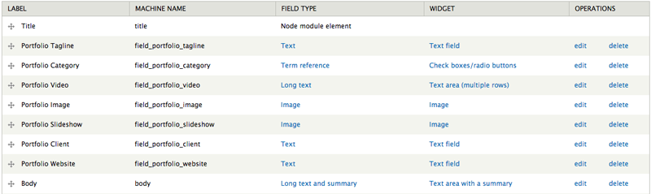
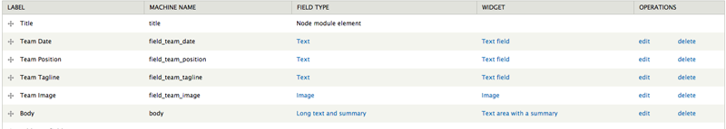
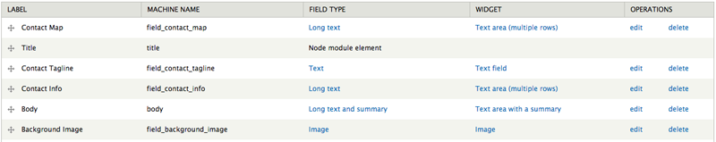
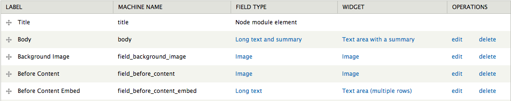
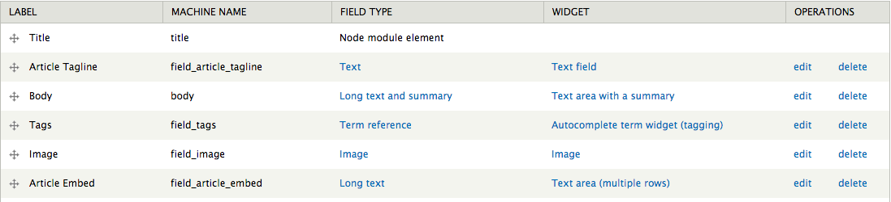

Overview
Other is perfect for the creatives out there, the forward thinkers and those who just want a kick-ass site for their business or service. For theme support that cannot be found in this documentation, please visit our support forum.
Updated: 12/23/13
Author: Refaktor
Docs powered by: TOC
Original design by
TommusRhodus
Installation
There are several ways Other can be installed. For existing sites that already have content, the first method will only involve the installation and activation of the theme. The second option includes a full Drupal 7 install with the same SQL database file used to create the theme demo. Please choose which installation method works best for you and follow the instructions. We do highly recommend you perform the full install, especially if you plan on using the Commerce functionality.
Theme Only
Option 1:- Visit yourdomain.com/admin/appearance/install
- Upload the Other.zip file
- Enable and set to default
- Extract the Other.zip file and upload via FTP to /sites/all/themes
- Visit yourdomain.com/admin/appearance/
- Scroll down to "DISABLED THEMES" and set and enable Other
Full Drupal Install
The following steps are designed for people that have experience manually installing Drupal and importing databases. If you do not feel comfortable performing these steps yourself, contact your server administrator for help. NOTE this option is for a completely new Drupal install. Do not import the provided SQL file into an existing Drupal database or you will lose all of your data!
- Create a database for this installation of Drupal and import the SQL file that came with the theme.
- Follow these directions to create the settings.php file. Save this file somewhere so you can copy it over to the Drupal installation we have provided.
- Copy the entire contents of the /demo/other folder to the location on your web server where you want your site to be accessed. If you want your primary domain to point to your install of Other, copy everything to the root folder. If you want your site to be accessed as a subsection of your domain (for example: yourdomain.com/drupal) then simply rename the /demo/other folder to the desired name and upload to the root of your server. Also be sure to copy over the settings.php file mentioned in the previous step
- Login to your site with the username admin and the password admin and visit /admin/people to change the admin username and password.
- Go through the Drupal configuration found in /admin/config options and update all the necessary information to reflect your website. Also be sure to visit /admin/config/media/file-system and change the Temporary Directory.
Other Sub-Theme
Other comes with a shell sub-theme called Other_sub that you can use to make customizations to the style and template structure of the parent theme without having to modify the parent theme itself. This is useful if you plan on updating the parent theme as we release updates on ThemeForest. If you performed the full install you will already see Other_sub in the list of themes available. If you did the standalone install you can find the Other_sub.zip file in the root of the download files and you can install it like any other theme.
There is an empty stylesheet already defined which is /css/custom.css (inside the Other_sub folder). Use this file to add all of the custom CSS that you plan on using. You can also copy any template file from the /Other/templates folder into the /Other_sub/templates folder and it will listen to the sub-themes template file first. This will allow you to update the parent theme as we make updates without losing your customizations. Just pay attention to the changelog and compare the parent theme files with yours and make any adjustments as needed.
You will need to configure the sub-themes theme settings separately from the parent theme's, so visit /admin/appearance/settings/Other_sub to configure the theme settings for the sub-theme. You also need to configure the block regions separately.
Menu
Other has a block region called Site Navigation which can be used to add any menu block you like. The demo simply uses the default Main Menu block but you can create a custom menu block if you like.

Note: make sure to check the "show as expanded" box on all parent items with children to ensure the dropdown menu works correctly.
Modules
Below are the modules required to fully utilize the theme:
General Required Modules
Other Content Data
If you used the "theme only" option to install the theme on an existing install that already has content we recommend you use our Other Content Data module to create the additional content types, fields and Views needed to fully utilize the theme. You will find it in the /assets folder in the download files. This module is a custom Features module and will not run without it. We recommend copying all of the modules from the /drupal_7/sites/all/modules folder into your install if you do not already have them. After you have all the modules simply upload and activate the Other Content Data module and the content types, fields and views will automatically be created.
Content Types
Portfolio
This content type can be used to create a portfolio of projects on your site. A collection of portfolio nodes can be displayed in several styles of view blocks such as http://refaktorthemes.com/other or http://refaktorthemes.com/other/gallery. Below we will outline the fields used in this content type and the different view blocks and their corresponding theme templates.
Fields:
- Title: The default Drupal title field.
- Portfolio Tagline: Used as a short description for your portfolio item.
- Portfolio Category: This is a term reference field that is linked to a vocabulary created specifically for this content type.
- Portfolio Video: A long text field for adding video embed code such as Youtube or Vimeo.
- Portfolio Image: The default single image for your item which is used on the main portfolio view block.
- Portfolio Slideshow: Use this field to upload images for the slider that is used on the single portfolio nodes.
- Portfolio Client:Used to display the client the portfolio item represents.
- Portfolio Website:Used to display the project website.
Template files
- /templates/node/node--portfolio.tpl.php
- /templates/page/page--node--portfolio.tpl.php
View Blocks
Portfolio Block - Example: http://refaktorthemes.com/other
This is the standard Portfolio style which utilizes the "Portfolio Block" view. If you are not using the full demo or did not use the Custom Content module you can use the /assets/views/portfolio-block.txt (in the root of the download files) to import this view. Then simply place the "View: Portfolio Block" in the Content region and configure the block visibility settings to your liking.
- /templates/node/node--view--portfolio--block.tpl.php
- /templates/views/views-view--portfolio-block.tpl.php
- /templates/views/views-view--unformated-portfolio-block.tpl.php
- /templates/views/views-view-list--portfolio-filters.tpl.php
- /templates/views/views-view-fields--portfolio-filters.tpl.php
Template files:
Portfolio Filters:
The Portfolio Block view includes support for an Isotope filter effect powered by Taxonomy terms. To utilize this effect visit /admin/structure/taxonomy and create a new vocabulary (example: Portfolio). After creating your vocabulary you can create the terms you wish to use to categorize your portfolio items. This taxonomy vocabulary can be linked to the Portfolio content type via a term reference field so you can select the category or categories you want to place your items into.
The filters are powered by a view block called Portfolio Filters that should be added to the "Sidebar Primary" region. If you don't already have this view you can use the code /assets/views/portfolio-filters.txt to import this view block.
Template files:
Portfolio Vertical - Examples: http://refaktorthemes.com/other/gallery and http://refaktorthemes.com/other/gallery-static
This is the vertical Portfolio style which utilizes the "Portfolio Vertical" view. If you are not using the full demo or did not use the Custom Content module you can use the /assets/views/portfolio-vertical.txt (in the root of the download files) to import this view. Then simply place the "View: Portfolio Vertical" or "View: Portfolio Vertical: Static" block in the Content region and configure the block visibility settings to your liking.
- /templates/views/views-view--portfolio-vertical.tpl.php
- /templates/views/views-view--unformated-portfolio-vertical.tpl.php
Template files:
Portfolio Horizontal - Examples: http://refaktorthemes.com/other/gallery-horizontal and http://refaktorthemes.com/other/gallery-horizontal-static
This is the horizontal Portfolio style which utilizes the "Portfolio Vertical" view. If you are not using the full demo or did not use the Custom Content module you can use the /assets/views/portfolio-horizontal.txt (in the root of the download files) to import this view. Then simply place the "View: Portfolio Horizontal" or "View: Portfolio Horizontal: Static" block in the Content region and configure the block visibility settings to your liking.
- /templates/views/views-view--unformated-portfolio-horizontal.tpl.php
Template files:
Team
This content type can be used to create a portfolio of team members on your site. A collection of team nodes can be displayed in several styles of view blocks such as http://refaktorthemes.com/other/team-vertical or http://refaktorthemes.com/other/team-horizontal. Below we will outline the fields used in this content type and the different view blocks and their corresponding theme templates.
Fields:
- Title: The default Drupal title field.
- Team Date: Used for the date your team member joined.
- Portfolio Position: Used for the position of your team member.
- Team Tagline: Used as a short description for your team member.
- Team Image: The default single image for your item used for both the single node and the view block.
Template files
- /templates/node/node--team.tpl.php
- /templates/page/page--node--team.tpl.php
View Blocks
Team Vertical - Examples: http://refaktorthemes.com/other/team-vertical.
This is the vertical Team style which utilizes the "Team Vertical" view. If you are not using the full demo or did not use the Custom Content module you can use the /assets/views/team-vertical.txt (in the root of the download files) to import this view. Then simply place the "View: Team Vertical" block in the Content region and configure the block visibility settings to your liking.
- /templates/views/views-view--team-vertical.tpl.php
Template files:
Team Horizontal - Examples: http://refaktorthemes.com/other/team-horizontal.
This is the horizontal Team style which utilizes the "Team Horizontal" view. If you are not using the full demo or did not use the Custom Content module you can use the /assets/views/team-horizontal.txt (in the root of the download files) to import this view. Then simply place the "View: Team Vertical" block in the Content region and configure the block visibility settings to your liking.
Team Masonry - Examples: http://refaktorthemes.com/other/team-masonry.
This is the masonry Team style which utilizes the "Team Masonry" view. If you are not using the full demo or did not use the Custom Content module you can use the /assets/views/team-masonry.txt (in the root of the download files) to import this view. Then simply place the "View: Team Masonry" block in the Content region and configure the block visibility settings to your liking.
Contact
This content type can be used to create a contact page such as the one seen at http://refaktorthemes.com/other/contact. Below we will outline the fields used in this content type nd their corresponding theme template files.
Fields:
- Contact Map: A long text field to embed a Google Map iFrame (https://maps.google.com/)
- Title: The default Drupal title field.
- Contact Tagline: Used as a short description for your contact page.
- Contact Info: Used for your basic contact information like address, phone number, etc.
- Background Image: Image upload field for an optional page body background image.
Template files:
- /templates/page/page--node--contact.tpl.php
- /templates/node/node--contact.tpl.php
Map Embed Example:
<iframe width="425" height="350" frameborder="0" scrolling="no" marginheight="0" marginwidth="0" src="https://maps.google.co.uk/maps?f=q&source=s_q&hl=en&geocode=&q=york&aq=&sll=52.8382,-2.327815&sspn=12.413292,18.764648&ie=UTF8&hq=&hnear=York,+United+Kingdom&t=m&z=13&ll=53.962301,-1.081884&output=embed&iwloc=near"></iframe>
View Page
This is a very basic content type that should be used for any of your pages using view blocks as it strips any margins and paddings. Below we will outline the fields used in this content type and their corresponding theme template files.
Fields:
- Title: The default Drupal title field.
- Body: The default Drupal body field.
- Background Image: Image upload field for an optional page body background image.
Template files:
- /templates/page/page--node--view-page.tpl.php
- /templates/node/node--view-page.tpl.php
Basic Page
This modified version of the default page content type can be used to create all of your normal pages. Below we will outline the fields used in this content type and their corresponding theme template files.
Fields:
- Title: The default Drupal title field.
- Body: The default Drupal body field.
- Background Image: Image upload field for an optional page body background image.
- Before Content: An image field for adding an image before the page title.
- Before Content Embed: A long text field that can be used for any kind of embeds such as Youtube videos. This will display before the node title and content.
Template files:
- /templates/page/node.tpl.php
- /templates/node/page.tpl.php
Article
This modified version of the default article content type can be used to create all of your article nodes. Below we will outline the fields used in this content type and the different view blocks and their corresponding theme template files.
Fields:
- Title: The default Drupal title field.
- Article Tagline: The default Drupal body field.
- Body: The default Drupal body field.
- Tags: The default Drupal tags taxonomy term reference field.
- Image: Image upload field for an optional article image.
- Article Embed: A long text field that can be used for any kind of embeds such as Youtube videos. This will display before the node title and content.
Template files:
- /templates/page/node--article.tpl.php
- /templates/node/page--node--article.tpl.php
View Blocks
Two Columns - Examples: http://refaktorthemes.com/other/blog.
This is the default blog style which utilizes the "Blog" view. If you are not using the full demo or did not use the Custom Content module you can use the /assets/views/blog.txt (in the root of the download files) to import this view. Then simply place the "View: Blog" block in the Content region and configure the block visibility settings to your liking.
- /templates/node/node--view--blog.tpl.php
- /templates/views/views-view--blog.tpl.php
Template files:
Medium - Examples: http://refaktorthemes.com/other/blog-medium.
This is the medium blog style which utilizes the "Blog Medium" view. If you are not using the full demo or did not use the Custom Content module you can use the /assets/views/blog-medium.txt (in the root of the download files) to import this view. Then simply place the "View: Blog Medium" block in the Content region and configure the block visibility settings to your liking.
- /templates/node/node--view--blog-medium.tpl.php
- /templates/views/views-view--blog-medium.tpl.php
Template files:
Large - Examples: http://refaktorthemes.com/other/blog-large.
This is the large blog style which utilizes the "Blog Large" view. If you are not using the full demo or did not use the Custom Content module you can use the /assets/views/blog-large.txt (in the root of the download files) to import this view. Then simply place the "View: Blog Large" block in the Content region and configure the block visibility settings to your liking.
- /templates/node/node--view--blog-medium.tpl.php
- /templates/views/views-view--blog-medium.tpl.php
Template files:
Image Styles
Image Vertical:
A scale and crop of 170x650 that is used with the Portfolio Vertical and Team Vertical view blocks.
Image Horizontal:
A scale and crop of 900x225 that is used with the Portfolio Horizontal and Team Horizontal view blocks.
Image Mason:
A scale and crop of 600x380 that is used with the Portfolio Block.
Block Regions
Other features 5 block regions where you can add your blocks. Visit yourdomain.com/admin/structure/block to add your own content to the defined block regions. Press "Add Block" to create a new custom blog, or select an existing block from the Disabled list below the defined block regions.
Font Awesome
Other supports the Font Awesome font library which can be used to render various icons. For example, the following code can be used to create a simple social icons block as seen on the demo:
<div class="social"> <a href="#"><i class="icon-twitter"></i></a> <a href="#"><i class="icon-facebook-sign"></i></a> <a href="#"><i class="icon-dribbble"></i></a> <a href="#"><i class="icon-flickr"></i></a> <a href="#"><i class="icon-github"></i></a> </div>
Thank You
Thank you very much for purchasing the Other Responsive Drupal 7 theme. Once again if you have any issues or feedback please connect via the ThemeForest author page. Enjoy using Other!
© 2013 Refaktor.